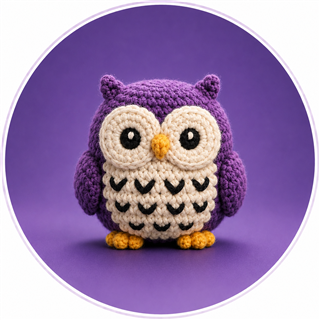

나만의 프로필 사이트
클로드 코드로 처음부터 직접 만든 첫 웹사이트입니다.
HTML
CSS
JavaScript
자세히 보기 →

비전공 개발자 · AI 분야로 커리어 전환 중
공무원을 그만두고 AI 분야로 직무를 옮기기 위해 준비하고 있습니다.
클로드 코드를 통해 처음으로 개발을 배우며,
이 과정을 이 사이트에 기록하고 있습니다.
지금 배우고 사용하고 있는 도구들이에요
진행했거나 진행 중인 프로젝트예요 (샘플)
궁금한 점이 있다면 언제든 편하게 연락 주세요
✉️ goshipspb@gmail.com